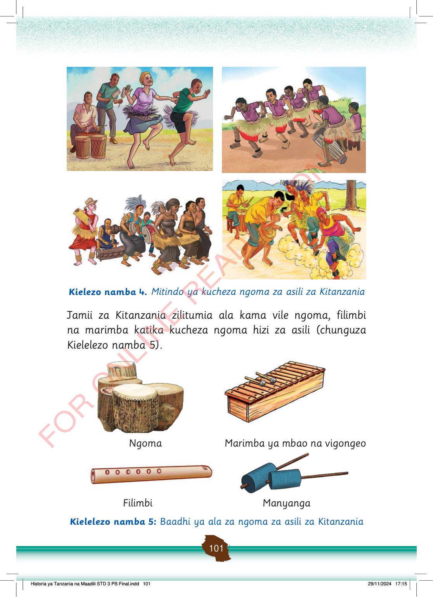

Watu wawili wanacheza ngoma ya asili huku wengine wakipiga ngoma na manyanga pembeni.
Kikundi cha watoto wanacheza ngoma ya asili wakiwa na mavazi ya nyasi, huku mwenzao akipiga ngoma.
Watu wanacheza ngoma ya asili huku wengine wakipiga filimbi, ngoma na marimba.
Watu wanacheza ngoma ya asili kwa nguvu huku vumbi likiinuka na wanamuziki wakipiga ala nyuma yao.
Kielezo namba 4. Mitindo ya kucheza ngoma za asili za Kitanzania
Jamii za Kitanzania zilitumia ala kama vile ngoma, filimbi na marimba katika kucheza ngoma hizi za asili (chunguza Kielelezo namba 5).
Ngoma tatu za asili za kupigwa kwa mikono.
Ngoma
Marimba ya mbao yenye vigonge viwili vya kupigia.
Marimba ya mbao na vigongeo
Filimbi yenye matundu ya kupulizia sauti.
Filimbi
Manyanga mawili ya asili ya kutikiswa kwa mkono.
Manyanga
Kielelezo namba 5: Baadhi ya ala za ngoma za asili za Kitanzania